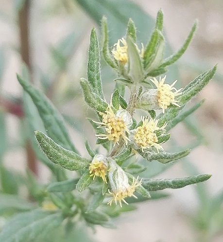
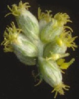
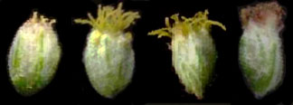
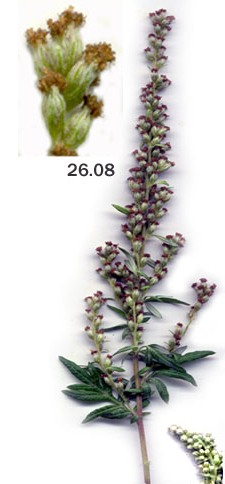

ARTEMISIA vulgaris L.
Armoise commune, herbe de la Saint-JeanDans l'Yonne
- Très commune.
- Mode de vie : vivace.
- Monoïque.
- Période de floraison approximative :
Juillet-Août.
- Habitat : Champs incultes (friches agricoles), décombres, haies, bord des chemins.
- Tailles :
 60 à 120 cm 60 à 120 cm
± 4 mm.
Origine supposée des noms
- générique : plante qui serait dédiée à une Artémise de Carie, sans doute en raison de ses fleurs mâles et femelles qui se retrouvent sur les mêmes épis.
Mais laquelle ? Artémise Ière, conseillère de Xerxès qui se serait écrié « Mes hommes sont devenus des femmes, et mes femmes des hommes. » ?
Ou d'Artémise II, épouse de Mausole ?
 300 : La Naissance d'un empire - Thème d'Artemisia 300 : La Naissance d'un empire - Thème d'Artemisia
- spécifique : un adjectif latin qui signifie commun.

Courbevoie (Hauts-de-Seine), 17 septembre 2022
Détails caractéristiques
- Ses tiges sont rougeâtres, pubescentes et striées.
- Ses feuilles n'ont pas le même aspect sur leurs deux faces :
- vert foncé et très légèrement duveteuses sur leur face supérieure,
- elles sont d'un blanc argenté sur leur face inférieure recouverte d'un feutrage blanchâtre,
- elles dégagent une odeur forte quand on les froisse.
- Ses capitules minuscules sont ovoïdes (en voici une coupe), réunis en grappe à l'aisselle des feuilles supérieures ils sont dressés ou tombants. Leurs fleurs centrales sont tubulées et les périphériques ligulées mais leur ligule est avortée.

- Leurs minuscules fleurs sont sans pétales et parfois sans tige.
- Leur androcée se compose de 5 étamines syngénésiques (soudées entre elles par leurs anthères pointues) et des filaments libres.
- Leur gynécée est un pistil composé de deux carpelles unis dont le style est divisé en branches courbées et ciliées.
Ces fleurs minuscules sont pollinisées par le vent qui emporte leurs grains de pollen de petite taille pouvant être allergisants pour certains.
- Les fruits, cypsèles produites par dizaines de milliers par une seule plante, sont eux aussi minuscules. Ils contiennent des graines fusiformes à paroi côtelée.
- Il ne faut pas confondre cette plante avec Ambrosia artemisiifolia en observant bien ses feuilles et leur odeur sécrétée par leurs poils, même si la composition chimique de l'essence qu'ils synthétisent varie selon l'endroit où elle pousse.
Généralités
- Les larves de la Tordeuse du foin, Epiblema foenella (Linnaeus, 1758), se nourrissent de ses racines et de ses tiges.
- En cuisine, ses terminaisons florales parfument agréablement canard, oie, poularde, porc et même l'anguille.

- C'est, de longue date, une plante médicinale dont les principes actifs se trouvent concentrés dans les feuilles.
- La pharmacopée traditionnelle lui attribuait des propriétés toniques et vermifuges tombées en désuétude. Actuellement, on considère qu'elle soulage les problèmes de digestion et ceux du cycle féminin (plante emménagogue).
- Les moutons, les chèvres et les volailles la consommeraient spontanément et elle leur permettrait d'éliminer plusieurs parasites intestinaux.

Nombre d'espèces icaunaises
dans le genre
- ARTEMISIA : 8, certaines introduites on ne sait comment (cryptogènes) mais non établies.
|


{kind=link}
{kind=link}
{kind=link}
{kind=link}
{kind=link}
{kind=link}
{kind=link}